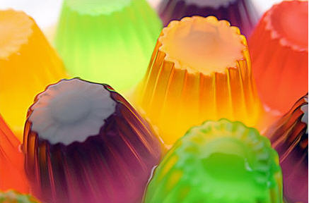

Deporte
En el gym

No hay que obsesionarse… Con los primeros calores todos nos agolpamos en el gimnasio para llegar divinos al verano pero… si en 7 meses del año no hacemos casi nada y pasamos a alguna actividad diaria nuestro organismo lo padece. A activarse ahora entonces!
OJO: No es lo mismo recuperarse de un entrenamiento en 24horas porque el cuerpo está acostumbrado al ejercicio, que el cuerpo de alguien no entrenado que empieza de golpe…
TIP: Lo ideal es hacer una actividad moderada durante todo el año.